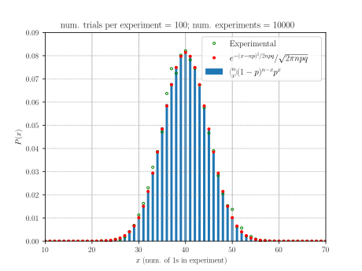

Due Thursday, September 3rd at 11:59 pm.
Save your answers in a GitHub repository named stats. Under Setting in the GitHub repository, set me (rweigel) as a collaborator.
Save your answers in the following format:
Save code as HW1_X.ext, where X is the problem number and ext is the extension (e.g., py or m).
Save scanned hand-written answers as HW1_X.pdf. Use a scanner app to create the document (don’t take a photo and convert it to PDF).
Save plots as HW1_X.png. If there are multiple plots for a problem, save them as HW1_Xa.png, HW1_Xb.png
Guess the relative frequency that instructions 1. and 2. above are followed precisely.
If you have difficulty with any of the above, we can discuss it at the end of class.
The objective interpretation of probability is that the the probability of event is the limit of the relative frequency of , , as the number of experiments, , used to compute the relative frequency approaches :
The following program computes the relative frequency of heads for an experiment of tosses where a zero or 1 is randomly selected with equal probability. Each experiment corresponds to a list of heads or tails.
1.
Save your code as HW1_1.py. Save your plot as HW1_1.png.
Modify this program so that it computes the relative frequency for trials of size and plot vs . See also Figure 2.2 of Devore.
import random1a = [0, 1]3# Experiment: Randomly select an element from the list a5result = random.choice(a)6# Repeat the experiment n times8n = 29results = []10for exp in range(1, n+1):11 result = random.choice(a)12 results.append(result)13print(f"n = {n} experiments:")15print(f" Results: {results}")16# rf = relative frequency17print(f" rf(0) = {results.count(0) / n}")18print(f" rf(1) = {results.count(1) / n}")192. For a trial of size , how many possible outcomes are there? That is, how many elements are in the sample space? (You do not need to list them.) Put your answer in a comment in in HW1_1.py.
3. (590 only)
Modify this program so a loop is not required by using a NumPy function. Save your answer in HW1_1.py.
4.
In class, I will raise the following questions (you don’t need to turn anything in):
How would you characterize the decreasing variation around as a function of ? What calculation would you do and what plot would you make?
Suppose that you wanted to know the probability of getting three heads in tosses and you don’t know the formula for computing this. How you you use a computer program to estimate this probability?
A random walk is a process analogous to flipping a fair coin. An example in physics is a cylinder constrained to move in one dimension being struck by air particles (and the cylinder moves without friction). Each strike sends the cylinder a small step to the left or right. The probability of a step to the left is the same as that of a step to the right. See also Chapter 1 of Kittel and Kroemer for a description in the context of statistical physics.
Suppose we want to know the probability that after three strikes, the cylinder is one step the right of its initial position using a simulation (we will cover an exact answer later).
We could do an experiment where we randomly select values of or with equal probability using random.choice([-1, 1]) three times (np.random.choice() can also be used for efficiency). A result could be [1, 1, -1]. The final position after these steps is sum([1, 1, -1]) = 1. To compute the probability that the final position is , we can repeat this experiment many times and count the number of times the final position is .
How many possible step configurations are possible? That is, what is the sample space of the experiment of taking three steps to right or left, with equal probability for each direction?
Write a program for a simulation that gives an estimate the probability that the cylinder is one step to the right of its initial position after three steps.
Save your code in a file named HW1_2.py.
An experiment involves tossing a coin 3x. What is the sample space of this experiment?
How many of the outcomes in the sample space had two heads?
Define event to be that the experiment yields two heads. Define event as the experiment yielding two tails. What is and ?
Save your answer in a file named HW1_3.pdf.
Suppose 55% of people exercise and 45% drink alcohol. Also, 70% do at least one of these.
What is the probability that a randomly selected person:
exercises and drinks alcohol?
does not do at least one of the two activities?
Use a Venn diagram (or any visual method) in the way that was used in class to demonstrate your answers.
Save your answer in a file named HW1_4.pdf.
Study the cab example in the Bayes’ rule section of the notes.
At the start of the Sept. 3rd class, I will ask you to solve a similar problem without notes. This will be the first quiz. This quiz will not be graded. If you attend class, you’ll get full credit.
Problem given:
2% of the population has cancer
A screening test for cancer is correct 80% of the time.
Your screening test claimed cancer.
What is the probability that you actually have cancer?
Answer:
where the first fraction is determined using Method II in the cab problem and the second using Method III.
Due Thursday, September 10th at 11:59 pm.
2% of the population has cancer. A screening test claims cancer in people with cancer 80% of the time and it claims cancer in people without cancer 9.6% of the time.
You take a test and it claims cancer.
What is actual probability that you have cancer?
Why is this answer different from the quiz answer?
Save your answer as HW2_1.pdf and upload it to your GitHub account.
Find a problem in a textbook involving permutations and/or combinations (cite your source unless you made up the problem) and provide a solution. Be prepared to explain the problem and its solution in class.
Try to find a problem that is challenging and find a way to explain your solution in multiple ways (e.g., table, tree diagram, code, etc.).
If the problem is complex and difficult to explain, make up a similar but simpler problem first so that the full problem’s solution is easier to understand.
Save your answer as HW2_2.pdf and upload it to GitHub. I’ll randomly select students to explain their answer at the whiteboard during class.
The binomial probability mass function is
(sometimes the simpler but equivalent notation is used).
The expectation value of is
By hand, compute when and . That is, compute when .
(590 only) Prove that .
Hint: Rewrite so that you can use the fact that
because .
Save your answer as HW2_3.pdf and upload to GitHub.
In Devore 3.4, an experiment that conforms to the Bernoulli trials constraints is referred to as a “Binomial Experiment.”
A Bernoulli trial has
two possible outcomes;
the probability of “success” is and the probability of “failure” is ;
these probabilities don’t change
For trials, the probability of successes is given by the Binomial distribution:
Use a random number generator to simulate 10,000 Binomial experiments with and and plot . That is, execute 10,000 experiments in which the experiment is selecting 100 values from the list [0, 1] with the probability of selecting a being . On the same axes, plot expected from the equation above using the given and .
In the next class, I’ll show that as , and for ,
where (the symbol means “is defined to be”).
Plot this on the same axes as in part 1.
Save your code as HW2_4.py and the plot as HW2_4.png.
Discussion questions for class (you do not need to turn anything in for this).
What is an interpretation of the meaning of the constraint ?
You are given a list of 0s and 1s and a claim that the values were generated by Bernoulli trials. How would you test this claim?

The quiz on Sept 10th will be on of the problems on counting that I covered in class (recall that there were three types: product rule, permutations, and combinations). The quiz will is closed book, closed notes, and closed computer and will be graded.